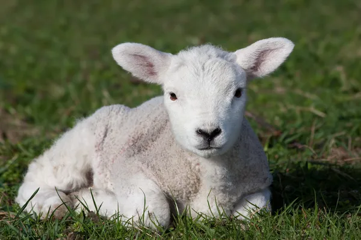
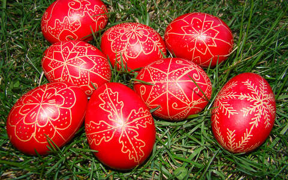

A barka bolyhos virágainak különleges gyógyerőt tulajdonítottak a régiek. Ha a családi tűzhelybe dobták, megóvta a házat a bajoktól, lenyelve pedig gyógyszerként elmulasztotta a torokfájást.
“Krisztus a mi bárányunk, aki megáldoztatott érettünk”. A legősibb húsvéti jelkép a bárány. Eredete a Bibliában keresendő. Az ótestamentumi zsidók az Úr parancsára egyéves hibátlan bárányt áldoztak, s annak vérével bekenték az ajtófélfát, hogy elkerülje őket az Úr haragja. A húsvéti bárány Jézust is jelképezi. A Bibliában Krisztus előképe volt az a bárány, amelyet a zsidók Egyiptomból való kimenetelük alkalmával ettek, és amelyet nap mint nap feláldoztak a jeruzsálemi templom oltárán.
A másik húsvéti állat, a húsvéti nyúl megjelenésének magyarázata már jóval nehezebb. Az ünnep termékenységgel kapcsolatos vonatkozásában magyarázat lehet a nyúl szapora volta. Mivel éjjeli állat, a holddal is kapcsolatba hozható, amely égitest a termékenység szimbóluma. Nyúl és tojás ősi kapcsolata a kutatók szerint a germán hagyományok alvilági istennőjének legendájában jelenik meg: eszerint a nyúl eredetileg madár volt, s az istennő haragjában négylábú állattá változtatta. E különös tulajdonságú állat hozzánk is német közvetítéssel került, de kialakulását homály fedi.
Fontos szerepe van a húsvéti étrendben is, de a tojások színezése, díszítése is régi korokra nyúlik vissza. A leggyakrabban használt szín a piros, magyarázatát a színek mágikus erejébe vetett hit adhatja. A pirosnak védő erőt tulajdonítottak. A tojások piros színe egyes feltevések szerint Krisztus vérét jelképezi. A tojásfestés szokása, s a tojások díszítése az egész világon elterjedt.